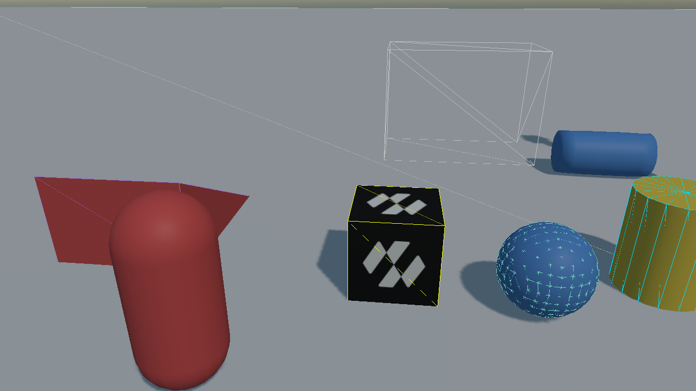
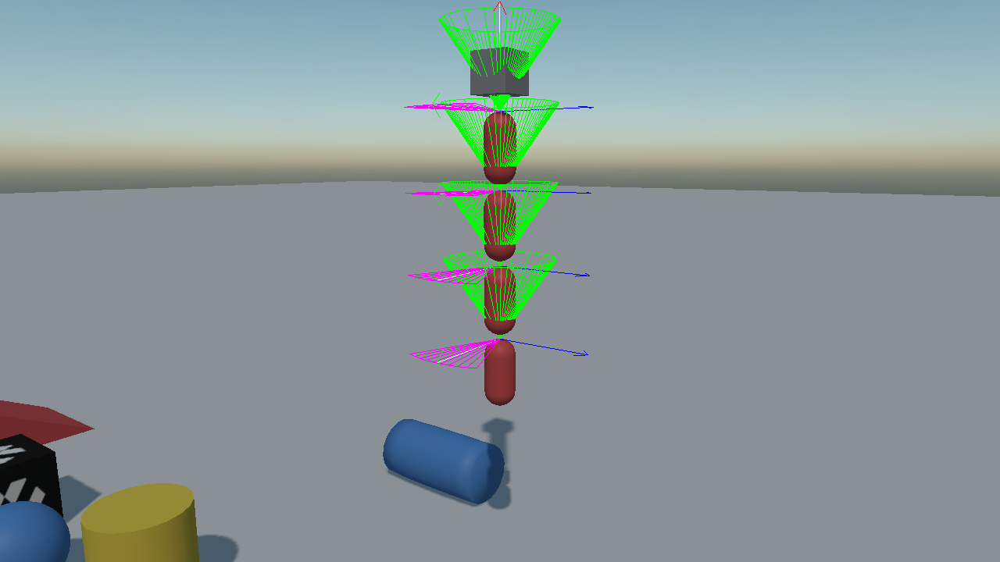
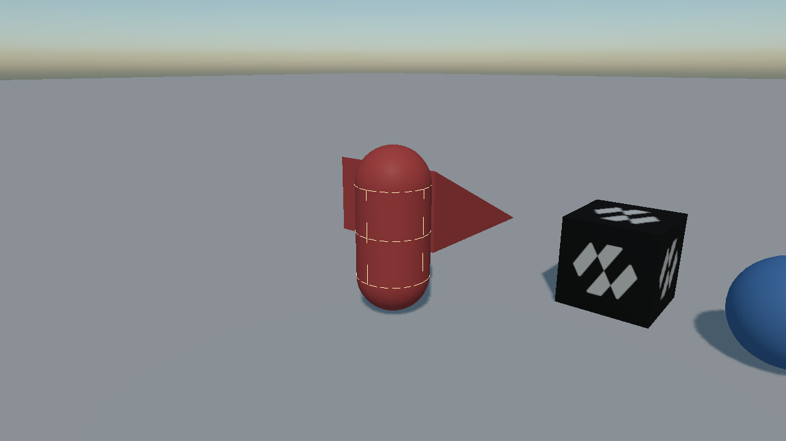
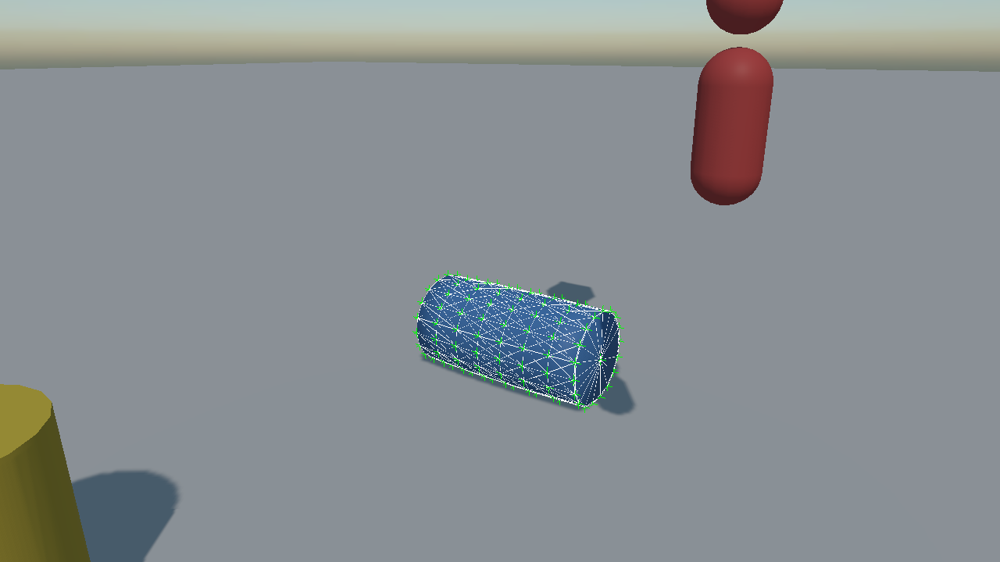
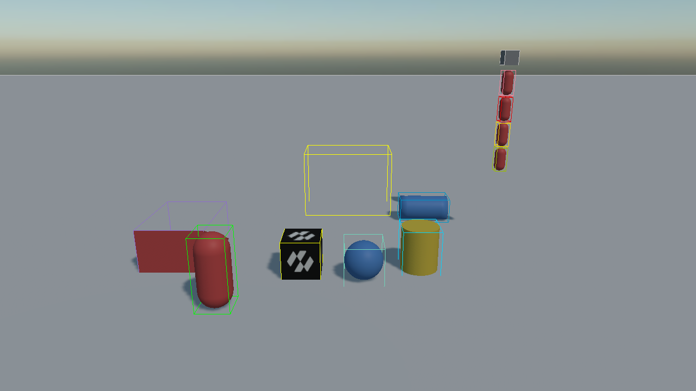
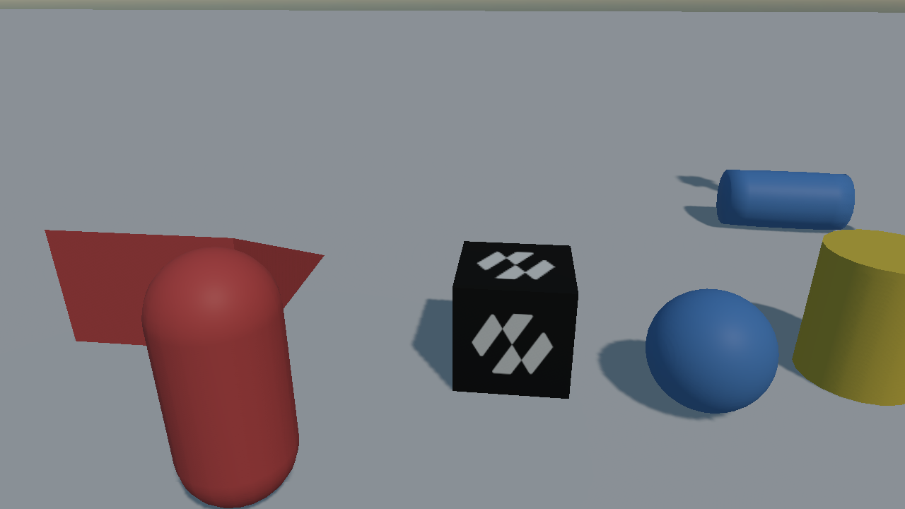
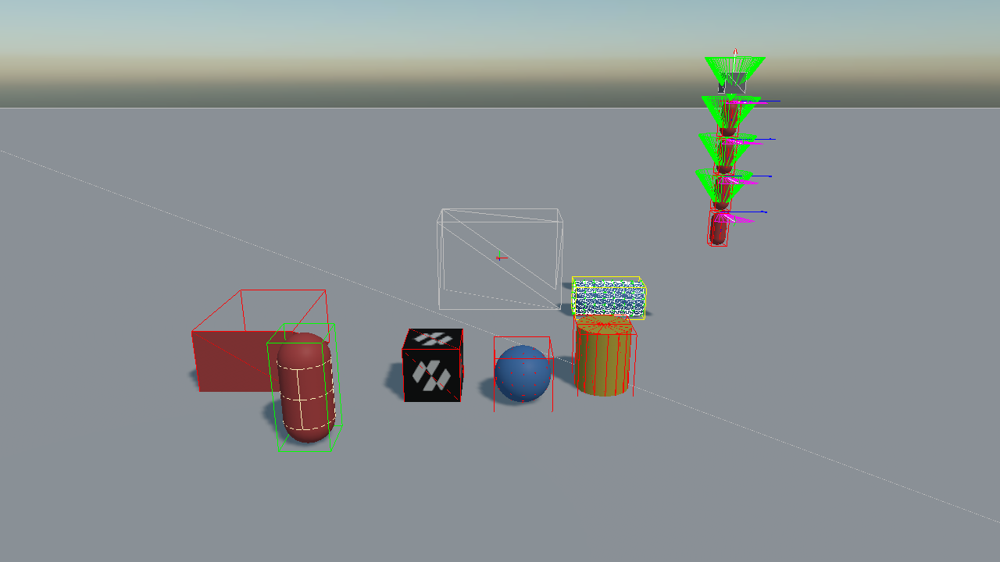

Debug Rendering
When a body behaves oddly, the first question is always whether its shape is what you think it is. Debug rendering answers it: the world draws its own shapes, bounds, contacts and constraints over the scene.
There are two switches. The RenderManager decides whether debug lines are drawn at all, and the PhysicsManager decides what the physics contributes to them:
this.Managers.RenderManager.DebugLines = true;
this.physicsManager.DebugFlags = PhysicsDebugFlags.Colliders | PhysicsDebugFlags.Constraints;
DebugLines is the render manager's general switch for debug line drawing, so physics shows up alongside whatever else a scene draws that way. DebugFlags defaults to Colliders | Constraints | Characters | SleepState, which is why turning DebugLines on in a physics scene is usually enough on its own.
Debug Flags
PhysicsDebugFlags is a flags enum, so any combination is allowed.
| Flag | What it draws |
|---|---|
| None | Nothing, whatever DebugLines says. |
| Colliders | The outline of every collider, in the interpolated pose it is drawn at. |
| BoundingBoxes | Each body's axis-aligned bounding box, which is what the broad phase sees. |
| CentersOfMass | A marker at each body's centre of mass. |
| Velocities | The linear velocity of every awake body, as a line. |
| Constraints | Constraints and the arcs of their limits: hinge ranges, swing cones, twist arcs, slider travel. |
| Characters | Each character controller's capsule and its ground normal. |
| SleepState | Colours bodies by state: grey static, green kinematic, yellow dynamic and awake, red dynamic and asleep. |
| SoftBodyStructure | The vertices and the edge, volume and LRA constraints of every soft body. |
| All | Everything above. |
The default is Colliders | Constraints | Characters | SleepState.
Five of them are only worth looking at against something they have a reason to draw, so the pictures below are all taken in one scene that carries a character, a chain of joints, a soft body, a convex hull over a mesh and a handful of primitives.
 |
 |
| Colliders: the flag worth leaving on while building a scene. The hull over the wedge is the case worth seeing: the wireframe and the surface it was generated from are not the same shape. | Constraints: each joint's frame drawn in place, with the cone a swing twist allows and the arc a hinge allows. This is how a ragdoll is tuned. |
 |
 |
| Characters: the controller's capsule and the normal of the ground it is standing on, which is what to watch when a character catches on a seam. | SoftBodyStructure: the vertices and the edges the solver is working on, which is a different picture from the surface being rendered over them. |
 |
 |
| BoundingBoxes: what the broad phase sees, which is always bigger than the shape and, for a rotated body, considerably bigger. | SleepState: which bodies have stopped being simulated. A scene that has gone quiet when it should not have is this flag's question. |

And every flag at once, which is rarely what you want but says what there is.
What it is actually showing you
The drawing comes from the simulation, not from the renderer. What you see is the shape the solver has, after everything that changed it on the way in:
- the convex radius applied, so a box is drawn very slightly smaller and rounder than its mesh;
- a height field quantized to the range it was built with;
- a compound shape assembled from every collider in the hierarchy;
- the entity's scale already applied.
That is what makes it worth trusting: anything that disagrees with the drawn mesh is a real difference, not a drawing artefact. A collider that is visibly the wrong size, in the wrong place, or missing from a compound is the bug you were looking for.
It needs a RenderManager in the scene with DebugLines on, and it draws on the same line batch everything else does. A scene without a render manager, a headless server for instance, simulates exactly the same and simply draws nothing.
Turning it on from Code
A key that cycles through the useful combinations is worth having in any project that uses physics:
public class PhysicsGizmos : Behavior
{
private static readonly PhysicsDebugFlags[] Steps =
{
PhysicsDebugFlags.None,
PhysicsDebugFlags.Colliders | PhysicsDebugFlags.SleepState,
PhysicsDebugFlags.Colliders | PhysicsDebugFlags.Constraints | PhysicsDebugFlags.CentersOfMass,
PhysicsDebugFlags.All,
};
[BindSceneManager]
private PhysicsManager physicsManager = null;
[BindSceneManager]
private RenderManager renderManager = null;
private int step;
private bool wasDown;
protected override void Update(TimeSpan gameTime)
{
KeyboardDispatcher keyboard = this.renderManager.ActiveCamera3D?.Display?.KeyboardDispatcher;
bool isDown = keyboard != null && keyboard.IsKeyDown(Keys.G);
// On the edge, not while held: a key tested every frame would run through all four settings in
// a twentieth of a second and land back where it started.
if (isDown && !this.wasDown)
{
this.step = (this.step + 1) % Steps.Length;
this.physicsManager.DebugFlags = Steps[this.step];
// The render manager's switch is what lets any of it reach the screen.
this.renderManager.DebugLines = Steps[this.step] != PhysicsDebugFlags.None;
}
this.wasDown = isDown;
}
}
What each flag is good for
| Symptom | Flag to turn on |
|---|---|
| A body rests too high, or sinks into the floor | Colliders: the shape is not the size the mesh is. |
| A compound body behaves as though it were one box | Colliders: a child collider is missing from the hierarchy. |
| A body tips over for no reason | CentersOfMass: its centre of mass is not where you assumed. |
| A vehicle rolls in every corner | CentersOfMass: set CenterOfMassOffset lower. |
| A ragdoll explodes on the first frame | Constraints: it was built outside its own limits. |
| A hinge opens the wrong way | Constraints: the limit arc shows where zero is. |
| A character catches on flat ground | Characters: watch the ground normal at the seams. |
| Bodies stop reacting to each other | SleepState: they have gone to sleep. |
| Cloth stretches away from its pins | SoftBodyStructure: the LRA constraints are missing. |
Tip
Colliders and SleepState together are the pair to keep on while building a scene: the first says whether the shapes are right, and the second says whether anything is still awake that should not be.
Note
Debug drawing is not free. It walks every body in the world and produces a line for every edge of every shape, so it costs real time in a large scene. It is a tool for development, not something to leave on.